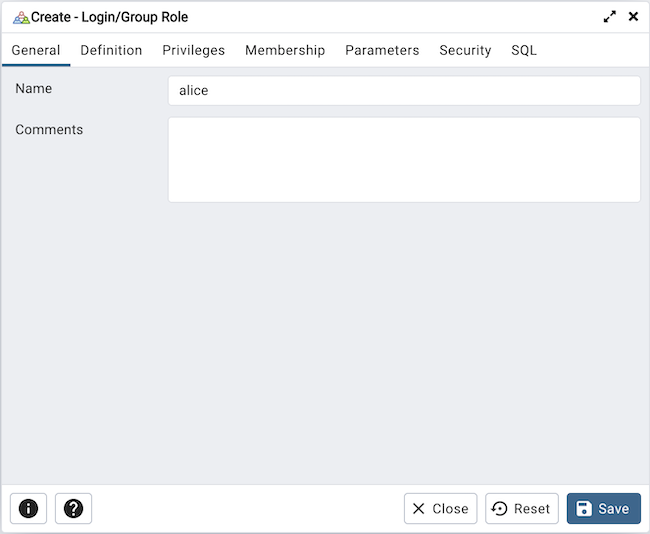
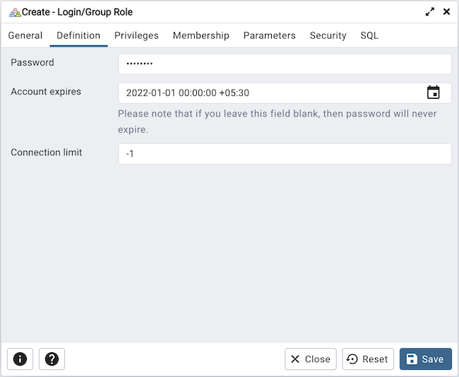
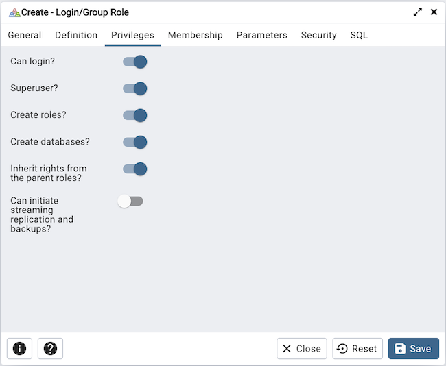
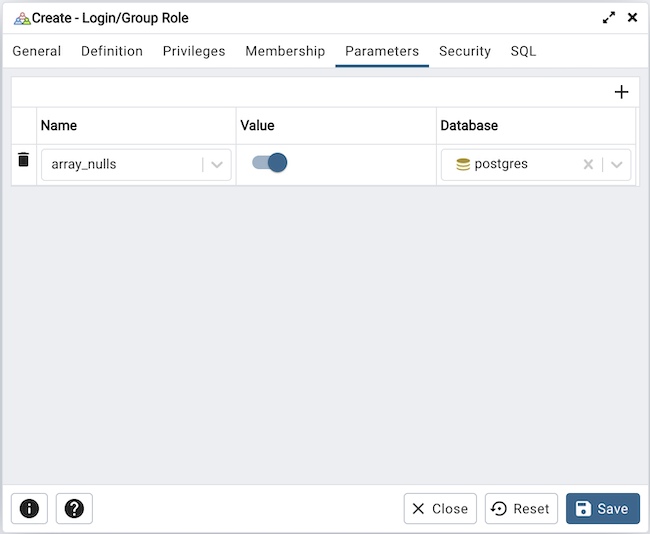
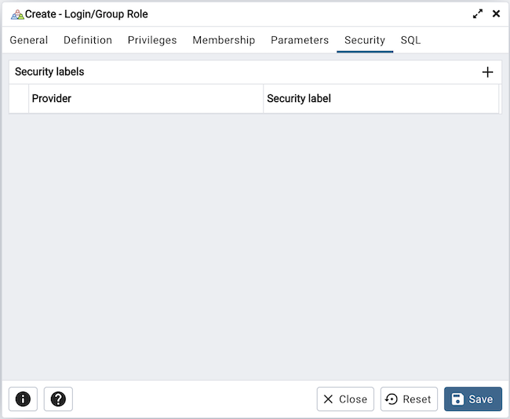
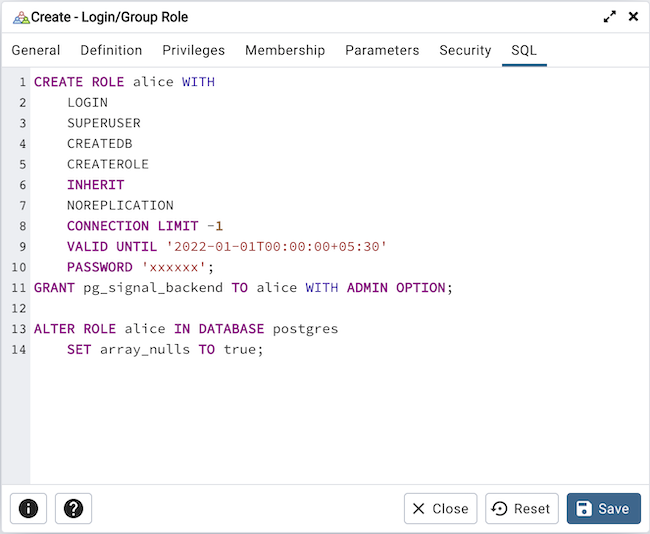

Login/Group Role Dialog¶
Use the Login/Group Role dialog to define a role. A role may be an individual user (with or without login privileges) or a group of users. Note that roles defined at the cluster level are shared by all databases in the cluster.
The Login/Group Role dialog organizes the creation and management of roles through the following dialog tabs: General, Definition, Privileges, Memberships Parameters, and Security. The SQL tab displays the SQL code generated by dialog selections.
Use the fields on the General tab to identify the role.
Use the Name field to provide the name of the role. The name will be displayed in the tree control.
Provide a note about the role in the Comments field.
Click the Definition tab to continue.
Use the Definition tab to set a password and configure connection rules:
Provide a password that will be associated with the role in the Password field.
Provide an expiration date for the password in the Account Expires field (the role does not expire). The expiration date is not enforced when a user logs in with a non-password-based authentication method.
If the role is a login role, specify how many concurrent connections the role can make in the Connection Limit field. The default value (-1) allows unlimited connections.
Click the Privileges tab to continue.
Use the Privileges tab to grant privileges to the role.
Move the Can login? switch to the Yes position if the role has login privileges. The default value is No.
Move the Superuser switch to the Yes position if the role is a superuser within the database. The default value is No.
Move the Create roles? switch to the Yes position to specify whether a role is permitted to create roles. A role with this privilege can alter and drop roles. The default value is No.
Move the Create databases switch to the Yes position to control whether a role can create databases. The default value is No.
The Update catalog? switch is disabled until the role is given superuser privileges. Move the Update catalogs? switch to the No position to control whether a role can update catalogs. The default value is Yes when the Superuser switch is in the Yes position.
Move the Inherit rights from the parent roles? switch to the No position if a role does not inherit privileges. The default value is Yes.
Move the Can initiate streaming replication and backups? switch to the Yes position to control whether a role can initiate streaming replication or put the system in and out of backup mode. The default value is No.
Specify member of the role in the Member of field and specify the members in the Member field. Confirm each selection by checking the checkbox to the right of the role name; delete a selection by clicking the x to the left of the role name. Membership conveys the privileges granted to the specified role to each of its members.
Click the Parameters tab to continue.
Use the fields on the Parameters tab to set session defaults for a selected configuration parameter when the role is connected to a specified database. This tab invokes the ALTER ROLE… SET configuration_parameter syntax. Click the Add icon (+) to assign a value for a parameter.
Use the drop-down listbox in the Name field to select a parameter.
Use the Value field to specify a value for the parameter.
Use the drop-down listbox in the Database field to select a database.
Click the Add icon (+) to specify each additional parameter; to discard a parameter, click the trash icon to the left of the row and confirm the deletion in the Delete Row popup.
Click the Security tab to continue.
Use the Security tab to define security labels applied to the role. Click the Add icon (+) to add each security label selection.
Specify a security label provider in the Provider field. The named provider must be loaded and must consent to the proposed labeling operation.
Specify a a security label in the Security Label field. The meaning of a given label is at the discretion of the label provider. PostgreSQL places no restrictions on whether or how a label provider must interpret security labels; it merely provides a mechanism for storing them.
To discard a security label, click the trash icon to the left of the row and confirm the deletion in the Delete Row popup.
Click the SQL tab to continue.
Your entries in the Login/Group Role dialog generate a SQL command (see an example below). Use the SQL tab for review; revisit or switch tabs to make any changes to the SQL command.
Example¶
The following is an example of the sql command generated by user selections in the Login/Group Role dialog:
The example creates a login role named alice with pg_signal_backend privileges; the role can make unlimited connections to the server at any given time.
Click the Info button (i) to access online SQL help.
Click the Help button (?) to access the documentation for the dialog.
Click the Save button to save work.
Click the Close button to exit without saving work.
Click the Reset button to restore configuration parameters.